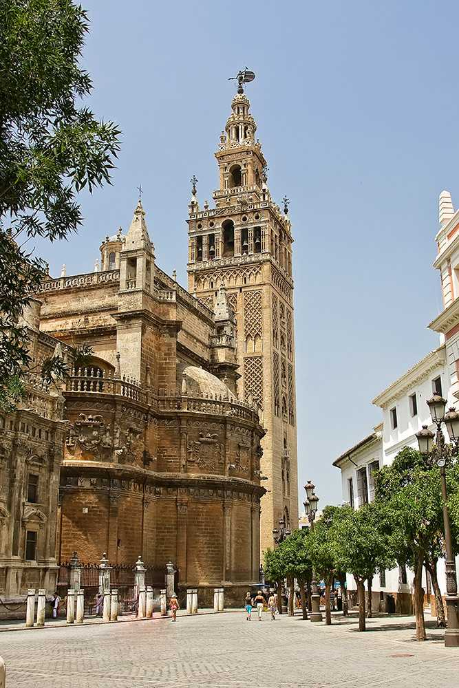

La Giralda es el campanario de la Catedral de Sevilla y, originalmente, el alminar de la antigua mezquita mayor construida en el siglo XII bajo el califato almohade. Con sus 104 metros de altura, fue en su momento la torre más alta del mundo. En su remate se encuentra el Giraldillo, veleta de bronce que da nombre al monumento y símbolo de la fe triunfante.